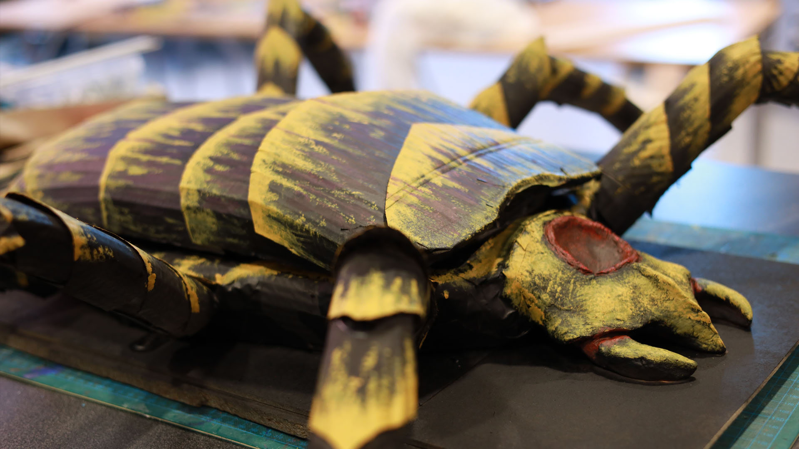
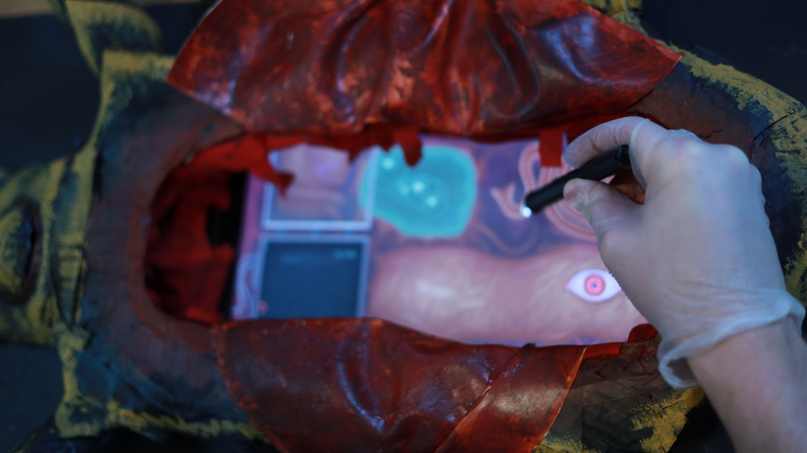
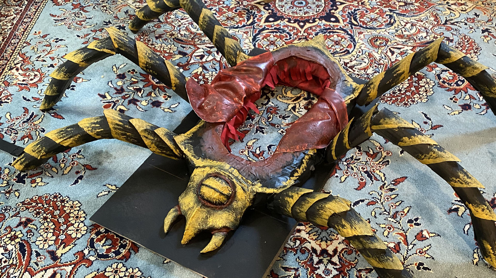
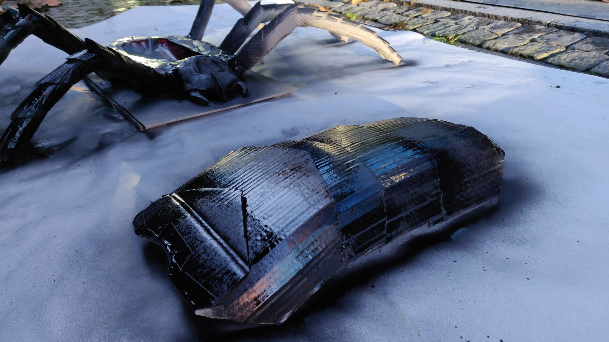
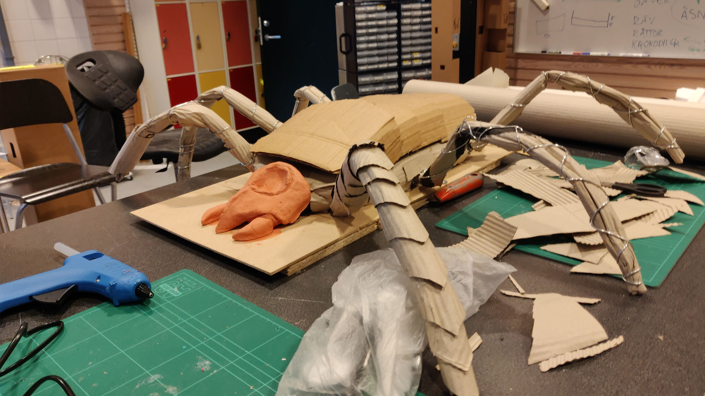

Instructions
The game is divided into 4 different operations that you need to perform to save the alien.
You need to pinpoint the correct positions in its heart by using the arrows on the
lower screen to hover the correct position on the top screen when the timer runs out.
Do this three times.
You need to clear all of the bubbles in the stomach acid by hovering them with your mouse until they pop.
Once cleared, no more will appear.
You need to lead the debris out of the intestines by dragging it with your mouse.
After reaching the middle, you can let go.
You need to rub away all of the viruses from the liver.
Do this by dragging your mouse back and forth across them.
They will change color and get closer to dissapearing, until they are gone.
Once all viruses are gone, you are done.
Background
This was originally made for a project which also involved a real life alien.




